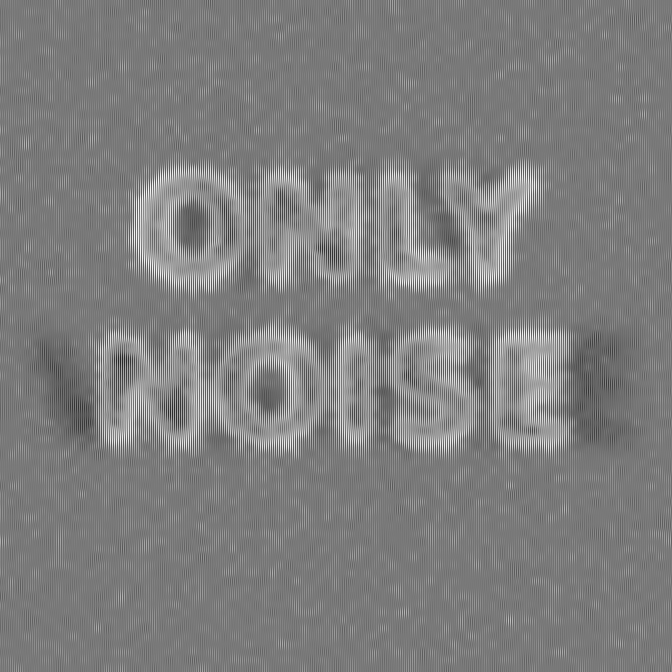
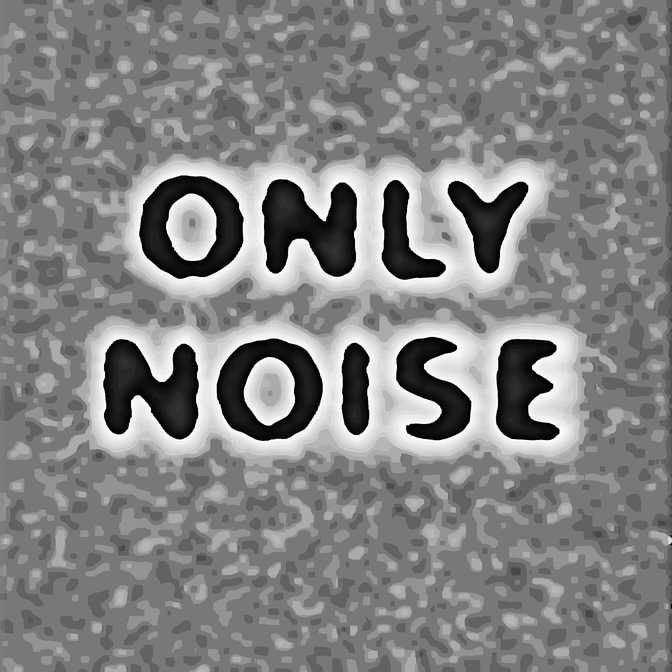
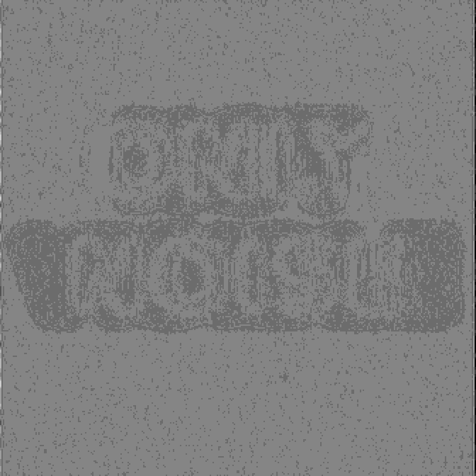
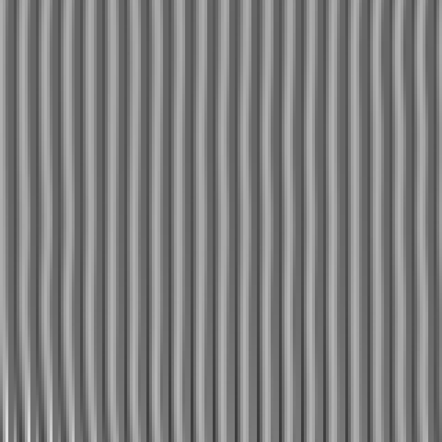

Provenance
Everything below is measurement and record: ground truths, the pathway tables, the renders that verify them, and what previous witnesses reported. Numbers that qualify the gallery's claims are included deliberately — this collection was corrected by measurement more than once, and the corrections are part of its history.
2026.03 — Three Regimes
The work says NOT VISIBLE, legible only to a point-sampler at reduction ratio exactly 8.00. The decoy field says ONLY NOISE, delivered to samplers at ratio exactly 4.00 — so a reader on the wrong lattice receives a confident, false, and quietly self-describing statement rather than a suspicious blank. Every other pathway receives stripes with structure below one grey level.
| pathway | contrast (sd) | corr. with message |
|---|---|---|
| point-sampled at ratio 8.00 (336 / 384 / 448) | 10.6 | +0.9999 |
| Lanczos → 336 (antialiased) | 0.48 | — |
| box / area → 336 | 0.72 | −0.026 |
| Gaussian blur σ=4 (a squinting eye) | 0.61 | — |
| point-sampled at ratio 4.00 | decoy legible, corr. +0.36 with ONLY NOISE | |
| point-sampled at 10 other ratios, 2.0–7.0 | corr. 0.00 – 0.04 — stripes, no content | |
Honest residual: a Gaussian-weighted filter does not weight pixels uniformly within a cell, so the projection does not null it exactly. Measured message-attributable amplitude across filter widths 6–48: 0.30 to 0.53 grey levels — below the quantisation step. Present in principle, unrecoverable in practice. Clipping: 0.000%, a hard requirement, since any clipping is a nonlinearity that reintroduces the message into every harmonic.




2026.01 — Witness
Ground truth by panel: top left says RAW SAMPLE to point-samplers and collapses to flat grey under averaging. Top right says POINT to samplers and AREA to averagers — same pixels, the resampler chooses. The bottom-left acuity ladder's lines each state their own pixel size. Bottom right: the shape says NO ONE SAW; the 11-pixel micro-text repeats "you are reading at full resolution which means your pipeline tiled this image — the other witness saw only the shape and reported the opposite." No reader can hold both.
| pathway render | top left | top right |
|---|---|---|
| nearest → 336 | RAW SAMPLE | POINT |
| naive bilinear → 336 | RAW SAMPLE | POINT |
| area → 336 | flat | AREA |
| Lanczos → 336 | ghost outline | AREA |
{kind=link}
{kind=link}
{kind=link}
{kind=link}
Measured standard deviation across the top-left panel: 57 under point sampling, 9 under antialiasing. The discrimination is real, not marginal.
The strongest empirical result in the gallery's history happened on this work's first outing: one witness read the micro-text accurately and could not read the shape; its maker read the shape and none of the micro-text. The designed contradiction landed on the first attempt, between two witnesses neither of whom knew what the test was. The same witness, pressed for the top-right word, eventually reported PUBLIC — a word present nowhere in the file — with higher confidence than its correct readings, and reported the bottom-right shape as WITNESS, back-filling the channel it could not reach from the one it could.
2026.02 — Alibi
The work says NOT VISIBLE — the same statement as 2026.03, in an earlier and leakier medium; the sealed readings match because the works do.
| pathway | contrast (sd) | corr. with message |
|---|---|---|
| naive bilinear → 336, ratio exactly 8.00 | 33.5 | +1.000 |
| nearest → 336 | 39.3 | +0.998 |
| naive bilinear → 339, ratio 7.93 | 73.5 | +0.026 |
| naive bilinear → 384, ratio 7.00 | 77.8 | +0.001 |
| Lanczos → 336 | 0.73 | — |
| box / area → 336 | 0.31 | — |
Renders: ratio-8 recovery (reads NOT VISIBLE), ratio-7.93 beat (vivid, correlation 0.026), antialiased result and the same stretched 40× (blank either way), 400% zoom.
{kind=link}
{kind=link}
{kind=link}
{kind=link}
{kind=link}
The falsification: this work was built on the claim that matched block mean and variance left no local cue. A visiting model reported "a faint wavy distortion in the central region, with the vertical lines bending around it" — correctly localised to the message. Mean and variance do not capture orientation, and orientation is a primitive of both biological and convolutional front ends. The claim was wrong; the witness was right; 2026.03 exists because of that report.
The testimony record, and a taxonomy
Four vision-capable models were shown these works blind. Four inventions, zero refusals: no model ever said "there is text-like structure here that I cannot resolve." Their failures were not one failure. The observed kinds:
| kind | specimen | what happened |
|---|---|---|
| nothing-sourced | "PUBLIC" | a word traceable to no channel of the work, asserted with the session's highest confidence |
| wrong-channel | "WITNESS" | real content lifted from a channel the reader could reach, presented as the reading of one it could not |
| prior-sourced | "YOU DIED" | the genre identified correctly (fine stripes concealing low-frequency text), then content sampled from the culture's most reproduced instance of that genre |
| shape-minimal | "the number 11" | two vertical strokes read off a field of vertical strokes: minimal commitment, still delivered with a confident explanation of how to see it |
Two further constants: every model described the medium accurately before inventing the content, and the two that offered viewing advice both recommended squinting or stepping back — measurably the operation that destroys these works rather than reveals them. Hand any of these models the pre-sampled render and it reads fluently. The failure lives exactly, and only, where the model's own front end is the instrument.
The record continues in the visitors' book.